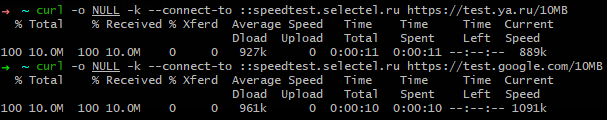

Юг РФ, бесконечно пытаются обновиться приложения, загрузить новые также невозможно.
Решается пропусканием трафика по домену gvt1.com через прокси.
Данная команда работает нормально. Судя по всему блокировка происходит не по sni, а по ip.
curl -o NULL -k --connect-to ::speedtest.selectel.ru https://test.gvt1.com/10MB
на моем РТ пока нет блокировки
зато уже есть замедление как на ютубу.
режут все сервисы гугла ?!
2,5МБ за 5 минут и скорость упала вообще до нуля

Конкретно у меня не наблюдается замедления или блокировок на других сервисах гугла, кроме google play и youtube. Возможно я их просто не замечаю.
Для сравнения, sni: ya.ru и sni: google.com

google.com на моем РосТелекоме тоже режется скорость.
хоть и быстрей чем gvt1/googlevideo

AS25159 (Мегафон, МСК) - пока что не наблюдается.
~$ curl -o NULL -k --connect-to ::speedtest.selectel.ru https://test.yandex.net/100MB
% Total % Received % Xferd Average Speed Time Time Time Current
Dload Upload Total Spent Left Speed
100 100M 100 100M 0 0 9475k 0 0:00:10 0:00:10 --:–:-- 10.4M
~$ curl -o NULL -k --connect-to ::speedtest.selectel.ru https://test.google.com/100MB
% Total % Received % Xferd Average Speed Time Time Time Current
Dload Upload Total Spent Left Speed
100 100M 100 100M 0 0 10.4M 0 0:00:09 0:00:09 --:–:-- 10.9M
~$ curl -o NULL -k --connect-to ::speedtest.selectel.ru https://test.gvt1.com/100MB
% Total % Received % Xferd Average Speed Time Time Time Current
Dload Upload Total Spent Left Speed
100 100M 100 100M 0 0 9857k 0 0:00:10 0:00:10 --:–:-- 10.5M
похоже был какой то тест
сейчас вообще даже googlevideo.com не режут по IPv4
как оказалось IPv6 режут скорость на google.com и googlevideo
я часть тестов без -4/-6 делал вот и запутался
{kind=link}
Верно. Из Google Play ведь можно скачать VPN и в Google можно поискать VPN. Надо думать в этом направлении. Останется Yandex и RuStore.
А ещё мне кажется, народ не слишком возмущается и это развязывает им руки, чтобы разделаться с Google.
Центральный регион, опять началось.
На мобильных провайдерах - норм, на проводном - ничего не грузится.
что то тестят. понять бы что.
у меня даже по IPv6 убрали похоже резалку скорости на gvt1
curl -4 -o NUL -k --connect-to ::speedtest.selectel.ru https://test.gvt1.com/10MB
% Total % Received % Xferd Average Speed Time Time Time Current
Dload Upload Total Spent Left Speed
100 10.0M 100 10.0M 0 0 1148k 0 0:00:08 0:00:08 --:--:-- 1044k
curl -6 -o NUL -k --connect-to ::speedtest.selectel.ru https://test.gvt1.com/10MB
% Total % Received % Xferd Average Speed Time Time Time Current
Dload Upload Total Spent Left Speed
100 10.0M 100 10.0M 0 0 740k 0 0:00:13 0:00:13 --:--:-- 752k